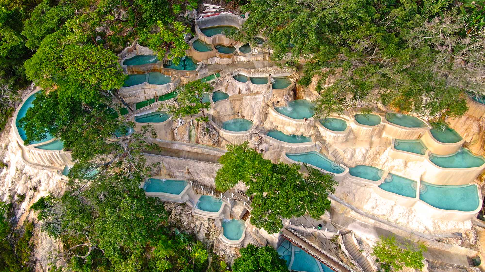

Las Grutas de Tolantongo is a breathtaking natural thermal resort tucked into a steep canyon in the municipality of Cardonal, Hidalgo, Mexico. Managed entirely as a community cooperative by local native families, it is world-renowned for its surreal, volcanically heated turquoise waters, dramatic steam caves, and cliffside infinity pools overlooking the mountains

"